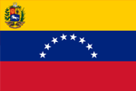

국기
- 종교 | 가톡릭, 새긴교
- 화폐 | 베네수엘라 볼리바르(VEF, Bs)
- 언어 | 에스파냐어
- 정치 | 대통령제, 연방제, 공화국
- 인구수 | 2926만
역사
베네수엘라는 1498년 콜럼버스의 탐험대에 의해 세상에 알려졌다.
식민 초기, 마라카이보 지방이 독일상인에게 양도되었던 짧은 기간(1528∼1556)을 제외하고는
300년간 에스파냐의 식민지 지배가 지속되었는데,
그 동안 인디오는 금 채굴과 커피·카카오 등의 재배를 위해, 아프리카 흑인 노예는
해안지대에서 사탕수수 재배를 위해 혹사당했다
미란다와 그 뒤를 이은 볼리바르의 지도하에 독립전쟁(1810∼1821)에 승리하여 1819년에 독립을 선언한
대콜롬비아의 한 연방으로 독립을 달성하였으나, 1830년에 대콜롬비아의 와해로 완전한 독립국으로 발족하게 되었다.
대통령 구스만 치하는 정교분리, 공교육제도의 실시 등 국민국가 확립을 위한 노력이 기울여졌으나,
내분·독재와 정정 불안정으로 제2차 세계대전 직후까지 군인지배시대가 계속되었다.
#카라카스
- 경제 |
- 기후 |
1950년대까지만 해도 카라카스는 베네수엘라 산업의 핵심 지역이었다. 이후 산업 분산 정책에도 생산에 주도적 역할을 하며 베네수엘라의 제조업을 이끌어 왔으며, 최근은 3차 산업 부문이 가장 큰 비중을 차지하고 있다.
열대 사바나 기후 지역에 속한다.
연 강수량은 900~1,300㎜이지만, 일부 산악 지역의 경우 2,000㎜에 이른다.
우기는 5월부터 11월까지로 연 강수량의 80% 이상이 집중되며 따뜻하고 습한 날씨가 이어진다. 반면 건기는 12월부터 이듬해 4월까지로, 청명한 하늘과 쾌적한 기온이 특징이다.
- 교통 |
- 관광 |
대중교통은 남미에서는 나름 좋은 편이지만, 지하철은 노선 길이가 짧아 도심 곳곳으로 이어지기에는 한계가 있으며 케이블카 역시 서카라카스 일대와 중앙부 사이를 잇는 데 집중되어 있어서 교통난을 해소하는 데 도움은 안 된다. 그래도 지하철 내의 치안은 생각보다 괜찮고 전철 이용 요금도 비싸지 않다.
카라카스 대학도시
엘 아빌라 국립공원
국립과학박물관
개선문
프란시아 광장
시몬 볼리바르 생가
볼리바르 광장
엘 아띨요
카라카스 현대 미술관
#메리다
- 특징 |
- 관광 |
정복자들이 도시를 건설할 때 마야 인들이 떠난 곳에 있던 건축물들이 에스파냐의 도시인 메리다에 자리한 로마 유적지를 연상시켜 메리다라고 이름 지어졌다. 식민 시기 도시의 건물들이 주로 흰색을 띠어 ‘시우다드블랑카(하얀 도시)’라고 불리기도 하였다.
궁전, 수도, 원형 극장 등 로마 시대 유적이 잘 보존되어 있으며, 유네스코 세계 유산 목록에 수록되어 있다. 욱스말·치첸이트사·카바·라브나 등 마야문명의 유적을 돌아볼 수 있다.
- 기후 |
- 경제 |
열대 사바나 기후가 나타난다.
연평균 기온은 26.7℃ 정도이며, 일 년 내내 온난하지만 건기와 우기가 나타난다.
연중 기온은 24~29℃로 온난하고, 우기인 6월부터 10월 사이에는 27~29℃로 좀 더 덥다.
식민 시기부터 메리다를 비롯한 유카탄 지역의 경제는 농업을 중심으로 발전하였다. 에네켄을 비롯한 농작물의 생산은 아시엔다(대농장)에서 이루어졌으며, 메리다와 유카탄 북부 지역은 오늘날에도 아시엔다 및 관련 관광 산업이 발달하였다.
베네수엘라 여행 기록 구경하기

2022.4.12
2022.4.12
2022.4.12
2022.4.12
2022.4.12
2022.4.12
2022.4.12
2022.4.12
베네수엘라 여행 팁
유리심장

가이드 설명을 들으면서 여행하면 더욱 재미있는 여행이 될 수 있어요. 특히 박물관은 가이드 필수!
가영이 여행가영
로마 여행갈 때는 꼭 편한 운동화 준비하세요!
가영이 여행가영
피사의 사탑 근처에는 사람이 많은데, 소매치기도 많은 지역이니 조심 또 조심하세요~!
소리가 들리는 곳으로
베니스는 딱 하루면 적당한 것 같고, 작은 섬들이기 때문에 빡시게 돌아 다니지 마시고,
젤라또 먹고 커피 마시고 하면서~ 천천히 여행하시는거 추천드려요!
유리심장
가이드 설명을 들으면서 여행하면 더욱 재미있는 여행이 될 수 있어요. 특히 박물관은 가이드 필수!